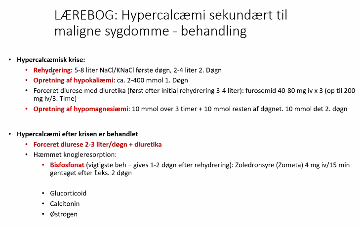

Endokrinologi
Introduktion
- endocrinology.dk / nbv
- Absalon
- Der er slides hvor der står lærebog - det er lidt for detailjeret
Case 1
- 39 årig kvinde kendt med Myxødem på basis af Hashimotos Thyreoiditis indlægges efter nogle ugers symptomer med slaphed, nær-besvimelser ved stillingsskift og ondt midt i maven.
- A: talende
- B: RF 20, st.p. i.a.
- C: BT 90/56, puls 110, bleg
- D: GCS 15
- E: tp 37,1
- Poll-diagnose:
- Kommentarer
- Supplerende blodprøver:
- Natrium 124
- kalium 5,2
- kreatinin 150
- Hgb 6,8
- Blodglukose 3,4
- TSH 12
- amylase normal
- Analyse:
- Lav Na, høj K, lav BS => binyrebarkinsuff
- høj TSH => underbehandlet myxødem?
- TSH = 12, så er det IKKE myxødem.
- Giver ikke lav BT
- Andre autoimmune lidelser disponere for andre
- Tilfældigt se-cortisol
- Bob, bob, Cortisol 200 er lavt umiddelbart.
- Diagnose af binyre
- Synacthen-test
- Spot-cortisol kan sendes til RH
- ACTH.
- Sekundær (lav) eller primær (høj)
- Svær at tage, på is, og svar om en uge.
- Behandling, akut binyrebarkinsuff
- IV Væske
- IV Solu-Cortef 100 mg som bolus efter 100 mg i 1000 ml i isoton glukose. 150 ml/t.
- Find udløsende årsag!
- Mange får det af en udløsede nårsag
- Lungebetændelse, operation eller anden stress som de ikke kan lave nok cortisol til.
- Mange får det af en udløsede nårsag
Case 2
(real case fra Fabers YL-liv på Frederiksberg Hospital)
- 15 årig dreng, går i 1.G, spiller fodbold, glad for Amalie på 1. række i klassen
- 1 uge med 5 kg vægttab, tørst, træthed
- Egen læge kommentar: kærestesorger!
- Hvilken diagnose: Diabetisk (ketoacidose)
- Han indlægges
- A: frie
- B: dyb resp.; RF 20; SAT 100% [Kussmaul]
- C: BT 110/60; p 100, pæne farver
- D: Vågen, Klar og Orienteret
- E: i.a.
- Andet: Blodglukose 55 mmol/l
- Blodprøver?
- A-gas
- Ketoner
- pH
- Udlufter CO2
- pO2 høj måske
- Bikarbonat
- Lav standard bikarb.
- Elektrolytter
- Dehydreret
- Na/K er normal
- Kreatinin er høj pga Dehydreret?
- A-gas
- Behandling?
- Væske
- NaCl
- K - insulin tager K+ ind i cellerne.
- Når mindre sur, da K+ ind i celler, når H+ ud.
- Man behøver ikke kende p-K+ før man hælder Kalium ind pga insulin.
- Væske
- de primære elementer i behandling
- Hvad skal man også huske?
Lærebogsslide på DKA.
- Udvikles ofte over 12-72 timer
- 30% er nydiagnosticerede DM
- Udløsende årsag:
- infektion, AMI, apoplexi, traumer m.m. Typisk øger pt. ikke sin insulinmængde, men pauserer pga opkastninger!!
- OBS: i Insulinpumper bruges udelukkende hurtigvirkende insulin, så pt. har intet depot.
- Mortalitet: 5%
- Karakteristika:
- Absolut eller relativt insulin mangel, høj adrenalin, øget lipolyse (FFA) som omdannes til betahydroxy smørsyre og acetoacetat.
- Ofte BG 30-60 mmol/I men også 121!
- Metabolisk inkompenseret acidose med Kussmauls respiration
- ofte StHCO3 ca. 11 mmol/1
- Oftest 5-6 I dehydrerede
- Ofte øvre abdominal dyspepsi
- Ofte 500 meq Na, 300 - 1000 meg K i underskud
- Oftest forhøjet leukocyttal og normal Tp.(obs mål central Tp.)
- 50% har en infektion som udløsende årsag
- Ca, 5% i regelret koma
DKA behandling
- Der skal allokeres en sygeplejeske til insulin behandlingen!! (ellers så går det af fløjten)
- Man skal ikke huske ovenstående, men den er på alle afdelinger
- Dan: På mange hospitaler er det intensiv der overtager behandlingen fordi den er så krævende
- Tre faser:
- Fra diagnose til ophør af acidose (standard bikarbonat/total CO2 > 18 mmol/l)
- Fra ophør af acidose og blod-keton < 0,6 til patienten spiser som habituelt
- Fra patienten er begyndt at spise som habituelt
Case 2.2
- Efter 7 timers behandling på hospital hvor patienten har fået det godt bliver han sløv
- A: frie luftveje
- B: RF 12, SAT 96%
- C: BT 160/95, p=50
- D: GCS 10
- E: tp.36,7
- Hvad er det sket?
- Cushing respons[?]. Højt BT + lavt p. auto hjerneregulation for beskytte.
- Hjerneødem og hypoglykæmi?
- Husk: 5% mortalitet skyldes hjerneødem!
- Vi ringer til intensiv - Behandling:
- Hyperton NaCl
- 100 ml 3% Natrium opl. præfabrikeret i løbet af få min [hvor mange ml? 2mEq stiger den siger.]
- Livsreddende
- I skal ikke vente - der kan ikke ske en skid i akutsituation [siger Jens]
- Hyperton NaCl
Om natriumforstyrrelser
- Kroniske Na-forstyrrelser skal rettes langsomt, akutte na-forstyrrelser skal rettes akut.
Case 7
- 23 årig mand som løber maraton for første gang. Foregår i Milano i juni
- Er rask og veltrænet, har forberedt sig godt, drikker rigeligt under løbet
- Kollapser efter 35 km og bringes til samarit telt:
- A: frie
- B: RF 12, SAT 97%
- C: BT 155/95 p 70, lidt kølig
- D: sløv, GCS 10
- E: i.a.
- Andet: Blodglukose: 4,5 * Han udvikler pludselig kramper, bider sig i tungen. * Diagnose: Hyponatriæmi * hedesalg er rigtigt. * Han har drukket meget vand => fortynder sig selv. Han har hjerneødem.
Hyponatriæmi
Lærebog - om stigning i Na
- P-Na må max stige
- 10 mmol/l de første 24 timer
- og 18 mmol/l! de første 48 timer
- Sigt efter ca 8 mmol/l per døgn
- Så: Monitorér P-Na hver 6. time første døgn
Case 3
- 21 årig mand med type 1 Diabetes behandlet med insulin pumpe: hurtigvirkende insulin 8 enheder til måltider + 30 enheder i døgnet som basal infusion
- Har været til kollegiefest hvor der er blevet festen igennem! Vågner næste morgen badet i sved, hjertebanken, voldsom hovedpine, sugen/ondt midt i maven
- Hans kæreste kører ham på skadestuen
- A: frie
- B: RF 20, SAT 98%
- C: BT 140/80, p 100, lidt bleg og perifer kølig
- D: lidt sløv, kan vækkes, ikke nakke-rygstiv, GCS 12
- E: tp 36,5
- Akut blodglukose: 1.9 mmol/l
- Diagnose: Hypoglykæmi
- Årsager
- Alkohol giver hypoglykæmi
- Alkohol lukker leverens glukoneogenese
- Årsager til diabetis hypo
- Injektionsinfiltrater
- lokalirriterende, kan give knuder
- Kan pludseligt frigøres
- på lår og mave
- Motion
- nedsat føreindtagelse *
- Injektionsinfiltrater
- Alkohol giver hypoglykæmi
- Forebyggelse
- Spis natmad når man går i byen
- Så må han skdie på blodsukkeret næste morgen.
Lærebog - diabetes hypoglykæmi
- Behandling:
- Vågen men handlingslammet person: Hjælpes til at drikke 250 ml sød saft, æblemost… evt tilsat 50% glukose
- Dernæst gives længerevarende kulhydrat per os: brød
- Svær bevidsthedspåvirkning: venflon i stor cubital-vene: 50 ml 20% glukose som bolus iv
- Bliver pt. klar suppleres med ovenstående perorale regime
- Hvis ikke fortsættes med inf. 5.5 — 10% glukose i.v., 200 ml/t
- Alternativ: Glukagon (GlucaGen) 1 mg i.m. (iv.) Kan anvendes af pårørende i hjemmet.
- Børn under 10 år: halv dosis
- Rask: udskriv (fra bl.a. skadestue) hvis socialt netværk findes
- Det kan recidivere, så de skal observeres.
Lægebog - diabetes - unawareness
Mange diabetikere kan således ikke mærke hypo
Case 4
- 65 årig mand med Polymyalgia Rheumatica som indtil fornylig har fået prednisolon med god effekt
- Indlægges med akut abdomen gennem 2 dage med opkastninger, mavesmerter og manglende tarmlyde
- A: frie luftveje
- B: RF 28, SAT 96%
- C: BT 90/60, p 120, bleg
- D: lidt sløv; CGS 13
- E: tp 38.8
- CT: mistanke om tarm perforation
- Kan vi operere?
- Mediciner tilkaldes mhp:
- Medicinsk behandling præ- og per-operativt?
- Steroidparaply
- Akut binyrebarkinsufficiens (sekundær pga prednisolon)
Lærebog - steroidparaply
- Under maximalt stress f.eks. store operationer, AMI. produceres normalt ca. 100 mg Cortisol=hydrocortison per døgn sv. til ca 25 mg Prednisolon (potens 1:4)
- Mindre stress f.eks. herniotomi, abrasio, håndkirurgi: Ca. 50 mg cortisol/døgn
- Efter 1-2 ugers beh. med Glucocorticoid kan Binyrefunktionen været hæmmet:
- 5% reagerer ikke med cortisol stigning ved større stress
- 50% udviser subnormalt response
- Risikoen for akut binyreinsufficiens ved stress er nok overdrevet, men øget tilførsel af Glucocorticoid vil ofte være hensigtsmæssig
- Pt'er i aktuel Glucocorticoid behandling (pt bør have ”Corticol-kort” på sig!!):
- Akutte medicinske tilstande: daglig dosis øges sv til 25-30 mg Prednisolon så længe belastningen varer
- Kirurgiske indgreb: ved anæstesi start: 25 mg cortisol iv, herefter inf. 100 mg cortisol/24 t. Alternativ er 25 mg iv/5.time til mave-tarmfunktionen tillader peroral behandling. Halv dosis 2. og 3. Dag
- Pt. tidligere i glucocorticoid behandling
- Seponeret:
- <2-3 mdr før stress: som ovenfor
- mere end 3 mdr før stress: ingen behandling
Ønskes Glucocorticoid behandling undgået laves Synacten test
Case 5
- 87 årig kvinde som bor på plejehjem. Har type 2 diabetes og behandles med sulfonylurinstof Glimipirid
- Anden medicin: SSRI, tiazid, ACE-hæmmer, alendronat, sovemedicin
- Nogle dage tiltagende sløv, drikker intet.
- Indlægges:
- A: frie
- B: RF 20, SAT 92%; a-gas: pH 7,35
- C: BT 180/95; p 100, varm og lidt blussende
- D: GCS 10, ikke nakke-rygstiv, pupiller egale, reagerer trægt på lys
- E: Tp 36,4; hud med nogle gamle suggilationer
- Andet: Blodglukose 60, kreatinin 250, Natrium 155
- POLL! (Diagnose?) * Diagnose: HONK - Non-ketotisk diabeteisk koma *
LÆREBOG: Non-ketotisk hyperosmolært diabetisk syndrom
- Udtalt forhøjet BG (ca. 45 mmol/l! (20-80))
- Udtalt dehydrering (ca. 10 L)
- Påvirket sensorium stigende til koma
- Hypernatriæmi
- Tilsammen: 2 x (Na + K) + BG + Carbamid > 330 mmol/l
- Der kan være let ketonuri og let acidose
- Årsag ? Ses typisk hos type 2 DM i thiazid eller steroid evt type 1 med leverlidelse.
- Mortalitet 50%
Lægebog - HONK behandling
Case 6
- 67 årig ellers tidligere rask mand indlægges efter måneder med aftagende appetit, træthed, vægttab, ondt i ryggen og nu gulsot.
- Ankomst lab:
- Hgb 6,0; BG 5,7; ALAT 150; Basisk fosfatase 780; bilirubin 56; kreatinin 179; ioniseret calcium 1,80
- Tentativ diagnose?
- Hypercalcæmi
- Cancer? Pancreas-cancer? Levermetastaser, lungecancer. prostatacancer med knoglemetastaser.
- knoglemetastaser eller PTH-lignende peptid fra fx SCLC.
- Knoglemetastaser, voldsom metabolisk aktivtet omkring metastase i knogle som frigiver Ca++.
- knoglemetastaser eller PTH-lignende peptid fra fx SCLC.
- Supplerende blodprøver?
- PTH! ved forhøjet ca++
- Så ved man om det er primært (høj PTH) eller sekundært (lav PTH)
- PTH! ved forhøjet ca++
Behandling af hypercalcæmisk krise
- Rehydrering
- 1ste døgn: 5-8 liter NaCI/KNaCl
- 2ndet døgn: 2-4 liter
- Opretning af hypokaliæmi
- 1ste døgn: ca. 2-400 mmol (kalium?)
- Forceret diurese med diuretika (først efter initial rehydrering 3-4 liter):
- furosemid 40-80 mg iv x 3 (op til 200 mg iv/3. Time)
- Opretning af hypomagnesiæmi:
- 10 mmol over 3 timer + 10 mmol resten af døgnet.
- 10 mmol det 2. døgn
 * Kombination af høj Ca og Phosphat udfældes i nyrere som ødelægger nyrerne i løbet af 14 dage.